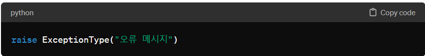

raise 명령문은 파이썬에서 예외를 강제로 발생시키는 데 사용됩니다. 이를 통해 개발자는 특정 조건 하에서 오류를 명시적으로 발생시켜, 예외 처리 메커니즘을 통해 해당 오류를 적절히 처리할 수 있게 됩니다. raise 명령문의 사용은 프로그램의 안정성을 높이고, 예상치 못한 상황에 대비하며, 코드의 가독성과 유지 보수성을 향상시키는 데 도움을 줍니다.
기본 사용법

- 여기서 ExceptionType은 발생시키고자 하는 예외의 종류이며, "오류 메시지"는 예외 발생 시 제공되는 메시지입니다. 이 메시지는 예외 처리 블록에서 사용될 수 있습니다.
예제
def divide(x, y):
if y == 0:
raise ZeroDivisionError("0으로 나눌 수 없습니다.")
return x / y
try:
result = divide(10, 0)
except ZeroDivisionError as error:
print(f"오류 발생: {error}")
사용 목적
- 오류 상황 감지 및 처리: 프로그램 실행 중 특정 조건을 충족할 때 명시적으로 오류를 발생시켜, 예외 처리 로직으로 제어 흐름을 이동시킬 수 있습니다.
- 프로그램의 안정성 확보: 예상치 못한 상황이나 잘못된 입력 값 등에 대해 명시적으로 예외를 발생시켜, 프로그램이 예외 상황에서도 안정적으로 동작하도록 합니다.
- API 사용 규약 강제: 함수나 메서드 사용 시 잘못된 인자가 전달되었을 때 raise를 사용하여 즉시 오류를 알림으로써, API의 사용 규약을 명확하게 강제할 수 있습니다.
 raise 명령문에 대해 설명해주세요
raise 명령문에 대해 설명해주세요